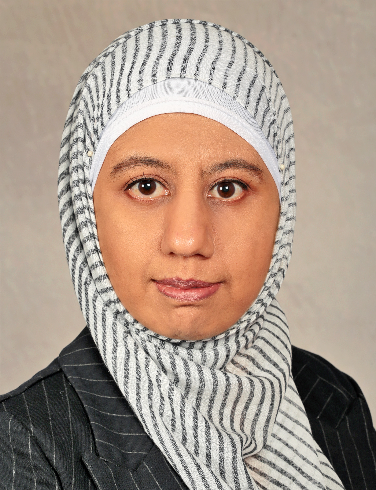
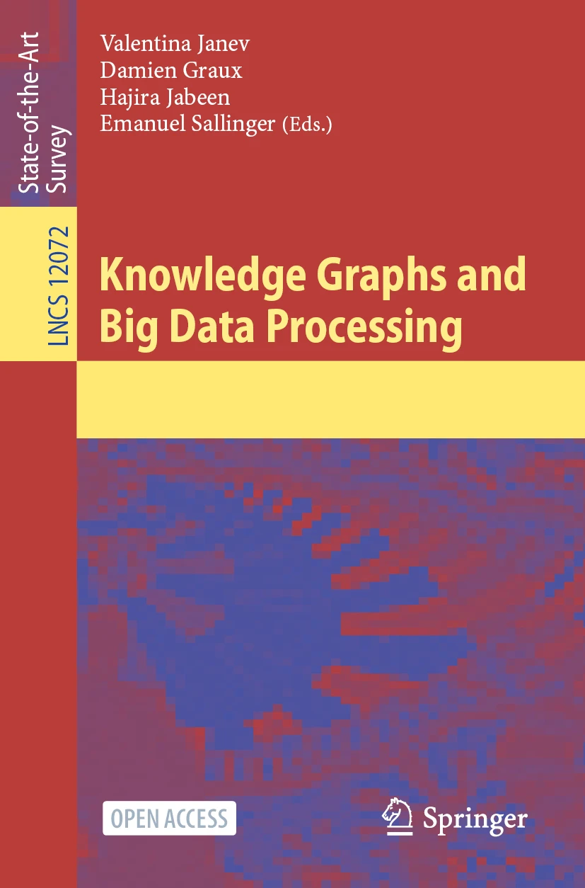

|
As a key researcher at the Biomedical Informatics (BI-K), Uniklinik Köln, I focus on harnessing the power of Artificial Intelligence (AI) to drive advancements in Data Science and Data Management within the healthcare domain. My work revolves around developing scalable AI models and algorithms for optimizing data analytics and ensuring effective data stewardship, particularly in managing biomedical data. By integrating cutting-edge techniques such as Knowledge Graphs, Natural Language Processing (NLP), and FAIR Data Management principles, I aim to transform data into actionable insights, enhancing research capabilities and improving clinical outcomes. Previously, I served as Team Leader in Big Data Analytics at the GESIS-Leibniz Institute for the Social Sciences, and as an Associate Researcher at Smart Data Analytics (SDA), focusing on distributed semantic analytics. I also worked as a Data Science Expert at the University of Cologne for n CEPLAS. My research has spanned diverse domains, including distributed analytics, data mining, semantic web, and the FAIRification of data. I've contributed to several H2020-funded projects, developing scalable architectures across several domains such as maritime, energy, food, social science, smart cities, and plant sciences. I’m passionate about organizational roles, teaching, research, and fostering industry collaborations. email: hajira.jabeen[at]uk-koeln.de skype:hajira.jabeen |
 |
| Conferences Organization |
|---|
General Chair
|
| Special Schools Organization |
|
| Journal Reviewer |
|
| Program Committee Member |
|
| Invited Talks |
|
| PhD |
|---|
|
| Master Theses |
|
| Seminars |
|
| Bachelor |
|
| Book |
|---|
|

Knowledge Graphs and Big Data Processing [Open Access] Editors: Valentina Janev, Damien Graux, Hajira Jabeen, Emanuel Sallinger Publisher: Springer DOI: https://doi.org/10.1007/978-3-030-53199-7 2020 |
| Peer Reviewed Journal Articles |
|
J Z Pan, S Razniewski, .... H Jabeen, .. D. Graux, Transactions on Graph Data and Knowledge (TGDK), 2024 C F Draschner, J Lehmann, H Jabeen, International Journal of Semantic Computing , 2023 F Maqbool, S Razzaq, A Yar, H Jabeen, 2023 IEEE Access S Ibrahim, S Fathalla, J Lehmann, and H Jabeen, 2023 IEEE Access F Maqbool, S Razzaq, A Yar, H Jabeen, 2023 Expert Systems H Allah, S Fathalla, J Lehmann, and H Jabeen, 2022 Enterprise Information Systems Musyafa, F., Vidal, M, Orlandi, F, Lehmann, J. and H Jabeen, 2019 Expert Systems With Applications M Ali, CT Hoyt, DD Fernandez, J Lehmann, H Jabeen, 2019 Bioinformatics Q Abbas, J Ahmad, H Jabeen International Journal of Advanced and Applied Sciences, 2017 Q Abbas, J Ahmad, H Jabeen International Journal of Advanced and Applied Sciences, 2017 Q Abbas, J Ahmad, H Jabeen SCIENCEASIA, 2017 Q Abbas, J Ahmad, H Jabeen Intelligent Automation & Soft Computing, 2017 P Westphal, L Bühmann, S Bin, H Jabeen, J Lehmann Semantic Web, 1-15, 2017 Q Abbas, J Ahmad, H Jabeen International Journal of Advanced Computer Science and Applications(IJACSA) , 2016 Q Abbas, J Ahmad, H Jabeen Mathematical Problems in Engineering, 2015 H Jabeen, AR Baig Neurocomputing, 2013 H Jabeen, AR Baig Applied Soft Computing 2012 H Jabeen, AR Baig International journal of innovative computing, information and control, 2011 H Jabeen, AR Baig International journal of engineering science and technology, 2010 H Jabeen, AR Baig Computers in Human Behaviour, 2010 |
| Book Chapters |
|
H Jabeen, A R Baig Studies in Computational Intelligence (SCI). Vol 284, Springer, 2010 H Jabeen, P Archer, S Scerri, A Versteden, I Ermilov, G Mouchakis, J Lehmann and S Auer EDBT/ICDT Workshops, 2017 H Jabeen Knowledge Graphs and Big Data Processing, Springer, 2020 H Jabeen, D Graux and G Sejdiu Knowledge Graphs and Big Data Processing, Springer, 2020 |
| Conference Proceedings |
|
S Linzbach, L Kallmeyer, S Dietze, H Jabeen, Annual Conference of the North American Chapter of the Association for Computational Linguistics, 2024 S Gangopadhyay, S Schellhammer, S Hafid, D Dessi,C Koß, K Todorov, H Jabeen, Proceedings of the 35th ACM Conference on Hypertext and Social Media, 2024 S Linzbach, L Kallmeyer, S Dietze, H Jabeen, Companion Proceedings of the ACM Web Conference, 2023 S Dietze, H Jabeen, L Kallmeyer and S Linzbach, IEEE International Conference on Semantic Computing (ICSC), 204-211, 2023 F B Moghaddam, J Lehmann, H Jabeen, IEEE Sixth International Conference on Artificial Intelligence and Knowledge Engineering (AIKE), 2023 F B Moghaddam, J Lehmann, H Jabeen, IEEE International Conference on Semantic Computing (ICSC), 204-211, 2023 C F Draschner, J Lehmann, H Jabeen, IEEE International Conference on Artificial Intelligence and Knowledge Engineering (IEEE AIKE), 2022 C F Draschner, J Lehmann, H Jabeen, IEEE International Conference on Artificial Intelligence and Knowledge Engineering (IEEE AIKE), 2022 F B Moghaddam, J Lehmann, H Jabeen, IEEE International Conference on Semantic Computing (IEEE ICSC), 2022 C F Draschner, C Stadler, F B Moghaddam, J Lehmann, H Jabeen, ACM International Conference on Information and Knowledge Management (CIKM), 2021 H Allah, S Fathalla, J Lehmann, and H Jabeen, International Conference on Knowledge Engineering and Ontology Development (KEOD), 2021 F Maqbool, S Razzaq, A Yar, H Jabeen, Congress on Evolutionary Computation (IEEE CEC), 2021 H Allah, S Fathalla, J Lehmann, and H Jabeen International Joint Conference on Knowledge Discovery, Knowledge Engineering and Knowledge Management (KEOD), 2021 Dirk von Suchodoletz, Timo Mühlhaus, Dominik Brilhaus, H Jabeen, Björn Usadel, Jens Krüger, Holger Gauza, and Cristina Martins Rodrigues E-Science Tage, 2021 F B Moghadam, C Drachner, J Lehmann, H Jabeen International Conference on Semantic Systems, 2021 D Graux, V Janev, H Jabeen, E Sallinger 26th Annual Conference on Innovation and Technology in Computer Science Education, 2021 D Graux, V Janev, H Jabeen, E Sallinger 26th Annual Conference on Innovation and Technology in Computer Science Education, 2021 C Drachner, J Lehmann, and H Jabeen IEEE International Conference on Semantic Computing (IEEE ICSC), 2021 S Ibrahim, S Fathalla, J Lehmann, and H Jabeen IEEE/WIC/ACM International Joint Conference on Web Intelligence and Intelligent Agent Technology (WI-IAT), 2020 H Allah, S Fathalla, J Lehmann, and H Jabeen International Joint Conference on Knowledge Discovery, Knowledge Engineering and Knowledge Management (KEOD), 2020 H Allah, S Fathalla, J Lehmann, and H Jabeen IEEE/WIC/ACM International Joint Conference on Web Intelligence and Intelligent Agent Technology (WI-IAT), 2020 S ̧Kafkas, R Celebi, M Ali, H Jabeen, M Dumontier and R Hoehndorf Bio-Ontologies, 2020 H Jabeen, J Weinz and J Lehmann IEEE Congress on Evolutionary Computation (IEEE CEC), 2020 F Musyafa, J Lehmann and H Jabeen International Conference on Theory and Practice of Electronic Governance, 2020 H Jabeen, E Hazeiv, G Sejdiu and J Lehmann IEEE International Conference on Semantic Computing, 2020 M Baig, H Jabeen, M Ali, J Lehmann Deep Learning for Knowledge Graphs, 2020 MN Mami, D Graux, S Scerri, S Auer, H Jabeen and J Lehmann International Conference on Information Integration and Web-based Applications & Services (iiWAS), 2019 Gezim Sejdiu, Damien Graux, Imran Khan, Ioanna Lytra, Hajira Jabeen, Jens Lehmann International Conference on Semantic Systems, 2019 S Ibrahim, S Fathalla, HS Yazdi, J Lehmann, H Jabeen International Conference on Semantic Systems, 2019 F Maqbool, S Razzaq, J Lehmann, H Jabeen International Conference on Intelligent Computing, 2019 MN Mami, D Graux, S Scerri, S Auer, H Jabeen and J Lehmann International Semantic Web Conference, 2019 G Sejdiu, A Rula, J Lehmann and H Jabeen International Semantic Web Conference, 2019 M Ali, H Jabeen,CT Hoyt,and J Lehmann International Semantic Web Conference, 2019 H Jabeen, N Tahara, J Lehmann International Conference on Computational Intelligence in Music, Sound, Art, 2019 H Jabeen, R Dadwal, G Sejdiu, J Lehmann European Knowledge Acquisition Workshop, 2019 FA Musyaffa, L Halilaj, Y Li, F Orlandi, H Jabeen, S Auer, ME Vidal International Conference on Web Engineering, 433-447 FA Musyaffa, F Orlandi, H Jabeen, ME Vidal Proceedings of the 11th International Conference on Theory and Practice of I Ermilov, ACN Ngomo, A Versteden, H Jabeen, G Sejdiu, G Argyriou, ... International Conference on Knowledge Engineering and the Semantic Web, 263-276 J Lehmann, G Sejdiu, L Bühmann, P Westphal, C Stadler, I Ermilov, S Bin, ...H Jabeen International Semantic Web Conference, 2017 S Auer, S Scerri, A Versteden, E Pauwels, A Charalambidis, ... International Conference on Web Engineering, 2017 AR Baig, H Jabeen Procedia Computer Science 82, 43-48 International Conference on Knowledge Management (ICKM 2012) H Jabeen, AR Baig, J Ahmed H Jabeen, AR Baig International Conference on Intelligent Computing, 177-182 H Jabeen, AR Baig International Conference on Knowledge-Based and Intelligent Information and H Jabeen, AR Baig International Conference on Hybrid Artificial Intelligence Systems, 56-63 M Imran, H Jabeen, M Ahmad, Q Abbas, W Bangyal 2010 2nd International Conference on Education Technology and Computer 4, V4 … 12 Z Jalil, AM Mirza, H Jabeen 2nd International Conference on Computer Engineering and Technology 2010 Z Jalil, H Jabeen IADIS Multi Conference on Computer Science and Information Systems(2007) H Jabeen, Z Jalil, AR Baig Genetic and Evolutionary Computation Conference (GECCO 2009). |
| Posters and Demos |
|
H Jabeen,N Tahara and J Lehmann International Conference on Computational Intelligence in Music, Sound, Art and Design H Jabeen, C Drachner and J Lehmann International Conference on Computational Intelligence in Music, Sound, Art and Design Mohamed Nadjib Mami, Damien Graux, Simon Scerri, Hajira Jabeen, Sören Auer The World Wide Web Conference, 2019 V Janev, J Lehmann, E Sallinger, S Vahdati, D Graux, and H Jabeen European Semantic Web Symposium (ESWS 2019) R Dadwal, D Graux, G Sejdiu, H Jabeen, J Lehmann European Semantic Web Symposium (ESWS 2019) Shimaa Ibrahim, Said Fathalla, Hamed Shariat Yazdi, Jens Lehmann and Hajira Jabeen European Semantic Web Symposium (ESWS 2019) D Graux, G Sejdiu, H Jabeen, J Lehmann, D Sui, D Muhs, J Pfeffer Semantics, 2018 N Roqaya, H Jabeen, J Lehmann Computer Science Conference for University of Bonn Students, 2018 I Ermilov, J Lehmann, G Sejdiu, L Bühmann, P Westphal, C Stadler, S Bin, ... International Semantic Web Conference, 2017 H Jabeen, J Lehmann Conference for Computational Bioscience Research Center, 2015 Mohamed Nadjib Mami, Damien Graux, Simon Scerri, Hajira Jabeen, Sören Auer, Jens Lehmann ISWC (Posters and Demos), 2019 H Jabeen, C Drachner and J Lehmann International Conference on Computational Intelligence in Music, Sound, Art and Design M N Mami, D Graux, S Scerri, H Jabeen and S Auer BDA (Demo Track), 2019 |
| Workshop Papers |
|
C F Draschner, F B Moghaddam, J Lehmann, H Jabeen LAMBDA Big Data Analytics Doctoral Workshop, 2021 F B Moghaddam, C F Draschner, J Lehmann, H Jabeen, LAMBDA Big Data Analytics Doctoral Workshop, 2021 |
| Non Reviewed Reports |
|
MN Mami, H Jabeen, S Auer T Ross-Hellauer, T Klebel, A Bannach-Brown, S Horbach, H Jabeen, N Manola, T Metodiev, H Papageorgiou, M Reczko, S Sansone, J Schneider, J Tijdink, T Vergoulis |
| 2022-09/2024, Team Leader, Big Data Analytics | GESIS-Leibniz Institute for the Social Sciences |
|---|---|
| I played a key role in the strategic planning and development of innovative solutions for large-scale social data analysis. My work focused on applying machine learning, knowledge graphs, and scalable data analytics to complex datasets in social science research. As part of the GESIS Methods Hub, I contributed to the planning and delivery of advanced analytics service, fostering the integration of AI-driven methodologies and ensuring FAIR data practices to support diverse research needs across the social sciences. | |
| 2020-2021, Senior Researcher & Data Scientist | University of Cologne |
| At CEPLAS (Cluster of Excellence on Plant Sciences), I led efforts in FAIR Data Management (FDM), focusing on the design and implementation of a comprehensive FDM solution in collaboration with the DataPlant consortium. I coordinated closely with multiple NFDI consortia, ensuring alignment with national standards for research data management. In addition to system design, I organised and conducted several workshops on Research Data Management (RDM), helping researchers implement FAIR principles to enhance data accessibility, interoperability, and reusability. I also supported development of research data management plans for several consortia. | |
| 2016-2020, Data Scientist and Research Group Leader | University of Bonn |
| I served as the Head of the Research Group “Distributed Semantics Analytics” within the Smart Data Analytics lab. My leadership involved overseeing research in distributed semantic analytics, focusing on scalable solutions for data integration, knowledge graphs, and machine learning applications. My responsibilities also included teaching, organizational management, and securing research funding. | |
| 2015-2016, PostDoctoral Researcher | Leipzig University |
| Worked as the work package lead at Horizon 2020 funded project Big Data Europe in development of a multi-purpose, open-source and scalable platform that is easy to use by communities.
Research in Description Logics, Structured Machine Learning and Semantic Web using Big Data tools like Spark, Flink, Dockers etc. |
|
| 2014-2015, Assistant Lecturer | IT University of Copenhagen |
| Shared the teaching responsibilities of the assigned courses to prepare and carry seminars, and go through the exercises. I have participated in following courses : 1. Software Architecture, 2. Data Mining. I remained active member of 'GameAI' and 'Real' research groups and worked with Monte Carlo Tree Search Algorithms, Procedural Game development and Evolutionary Algorithms for Games and Arts. | |
| 2013-2014, Software Engineer | TEO Intl A/S, Copenhagen |
| Worked in a team-project for accelerated global team building solution. | |
| 2012-2013, Head of the Department | IQRA University |
| The department of ‘Computing and Technology’ has more than 20 employees and about 2000 students. I have efficiently delivered and managed multitude of disciplines in my tenure as the Head of the Department. | |
| 2009-2013 , Assistant Professor | IQRA University |
| I have taught a variety of subjects at the Undergraduate, Graduate and PhD level. The peer review and student assessment of my courses have always been outstanding. | |
| Project [Role] | Abstract | Date |
|---|---|---|
| Big Data Europe
[Technical Leader] |
Technical lead of “Big Data Integrator Platform” built to handle large volumes of heterogenous data. The platform demonstrates usecases from the seven societal challenges targetted by the European Union H2020 i.e.Climate, Energy, Food, Health, Transport, Security, and Social Sciences | 2015-2018 |
| Big Data Ocean [Technical Leader] |
Technical Lead for the data harmonization and platform for maritime data | 2016-2019 |
| OpenBudget [ML expert] |
Technical advisor for platform development and multimodal data analytics | |
| LAMBDA [Academic expert] |
Knowldge exchange expert and educationist LAMBDA defines a scientific strategy for stepping up and stimulating scientific excellence and innovation capacity, increasing research capacities and unlocking the research potential of the biggest and the oldest R&D Institute in the ICT area in the whole West Balkan region, turning the Institute Mihajlo Pupin into a regional point of reference when it comes to multidisciplinary ICT competence related to Big Data analytics. |
2018-2020 |
| Gradana [Academic Expert] |
Knowldge exchange expert and educationist | 2017-2019 |
| Better [ML Consultant] |
Machine Learning and Analytics consultant BETTER is implementing a Big Data intermediate service layer focused on creating user-centric services and tools, while addressing the full data lifecycle associated with EO data, to bring more downstream users to the EO market and maximise exploitation of Copernicus data and information services. |
|
| SLIPO [ML Consultant] |
Machine Learning and Analytics consultant SLIPO develops software, models and processes for: transforming conventional POI formats and schemas into RDF data; interlinking POI entities from different datasets; enriching POI entities with additional metadata, including temporal, thematic and semantic properties; fusing Linked POI data in order to produce more complete and accurate POI profiles; assessing the quality of the integrated POI data; offering value added services based on spatial aggregation, association extraction and spatiotemporal prediction. |
|
| Cleopetra [Academic Expert] |
Knowldge exchange expert and educationist | 2019-2022 |
| Bio2Vec [Co PI] |
Technical lead | 2017-2020 |
| PLATOON [Co PI] |
Technical lead, (Digital PLAtform and analytic TOOls for eNergy) | 2020-2022, |
| PhD |
|---|
|
| Master Theses |
|
{kind=link}